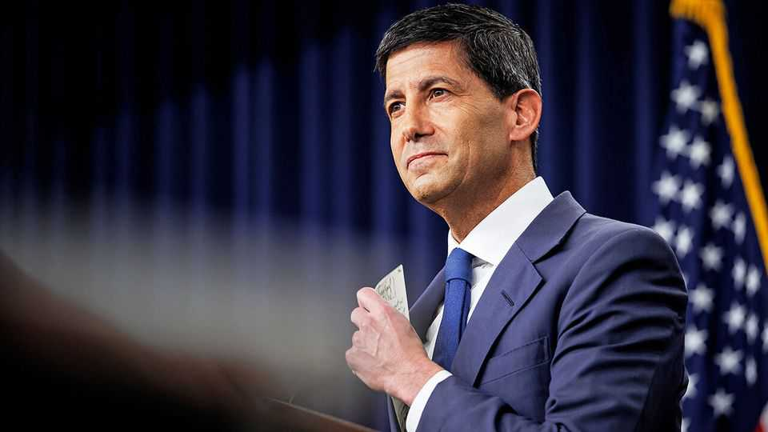

Kevin Warsh is struggling to escape his predecessor’s problems
High inflation, weak jobs numbers and presidential interference trouble the Federal Reserve

Aug 13th 2026
Kevin Warsh enjoys marking a “new chapter”. The newish chair of the Federal Reserve has invoked that writerly metaphor at nearly every public appearance since taking charge in May. He wants markets, politicians and households to understand that now things at the Fed will be different. Yet the first months of his tenure have stood out not for novelty but for continuity.
Leaf back a year, to the summer of 2025. Then, Jerome Powell’s Fed was uncomfortably caught between wobbly jobs numbers and above-target inflation, fuelled by tariffs: a quintessential but fiddly central-banking dilemma. To that, Donald Trump added a more unusual political bind. The president’s attempt to sack Lisa Cook, a Fed governor, over alleged wrongdoing on mortgage paperwork threatened to jeopardise the Fed’s independence. America’s central bankers might think twice before defying demands from the White House for lower rates if this could get them fired.
A year on the same story holds, almost beat-for-beat. Inflation is still not back to the 2% target. The latest consumer-price figures for July, released on August 12th, showed that these rose by 3.4% year on year. Monthly “core” goods prices—excluding food and energy—picked up too, suggesting that companies are once again passing tariffs on to shoppers. Overall core inflation, which includes services, was a little more reassuring, at 2.5%. Still, above-target inflation has already persuaded several rate-setters to dissent in favour of higher rates. Markets now peg the odds of a hike at the Fed’s next meeting in mid-September at roughly 40%.
Meanwhile, employment numbers point to the opposite risk: a softening economy in need of lower rates. America shed 23,000 jobs in July and previous months’ gains were revised sharply down. Despite Mr Warsh’s long-standing reputation as a rate-raising hawk, he might find that outcome a more comfortable one. Mr Trump bangs on about how he wants rate cuts at every opportunity.
Then there is Ms Cook. In June the Supreme Court blocked Mr Trump’s effort to fire her and carved out special protections for the “unique” constitutional position of the Fed. Unfussed, the president has doubled down. On August 5th the White House wrote to Ms Cook reiterating that Mr Trump was considering firing her and giving her three weeks to respond. In a statement, Ms Cook’s lawyers called the allegations “baseless” and the Supreme Court precedent “clear”. Mr Warsh may have to wait for that new chapter. ■